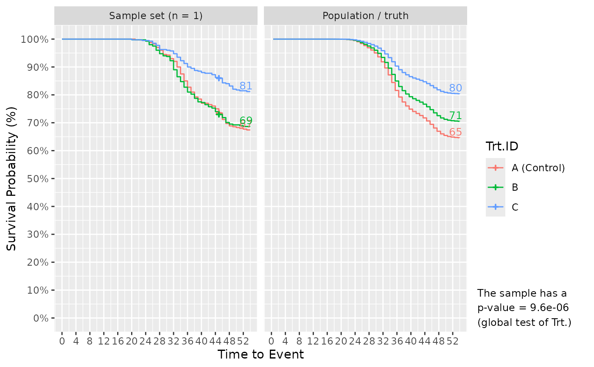
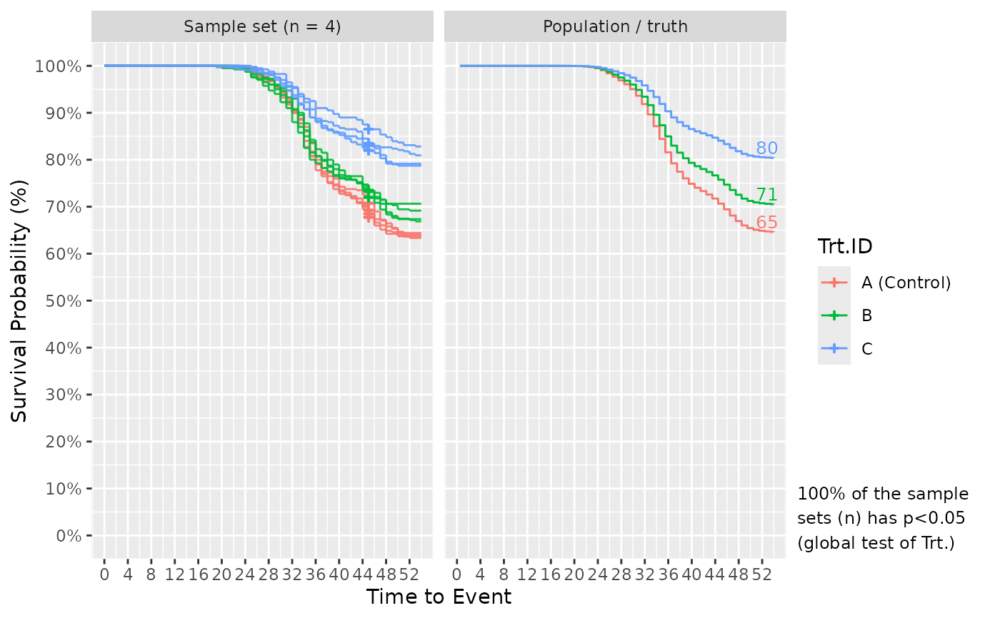
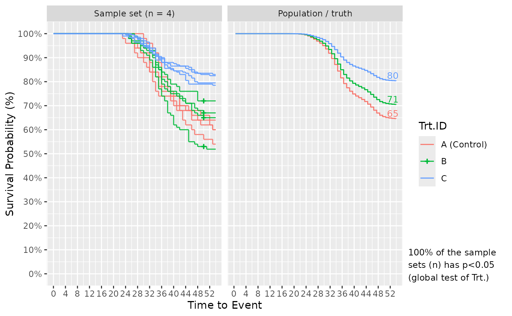
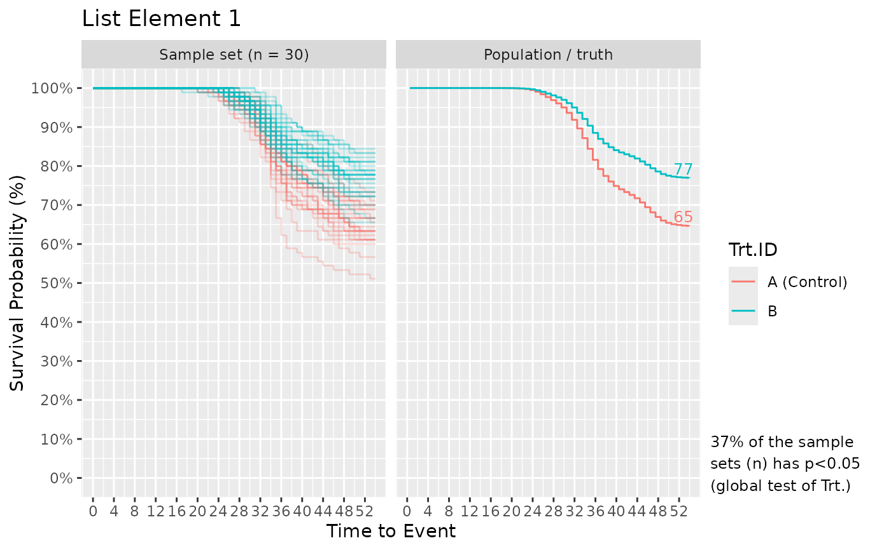
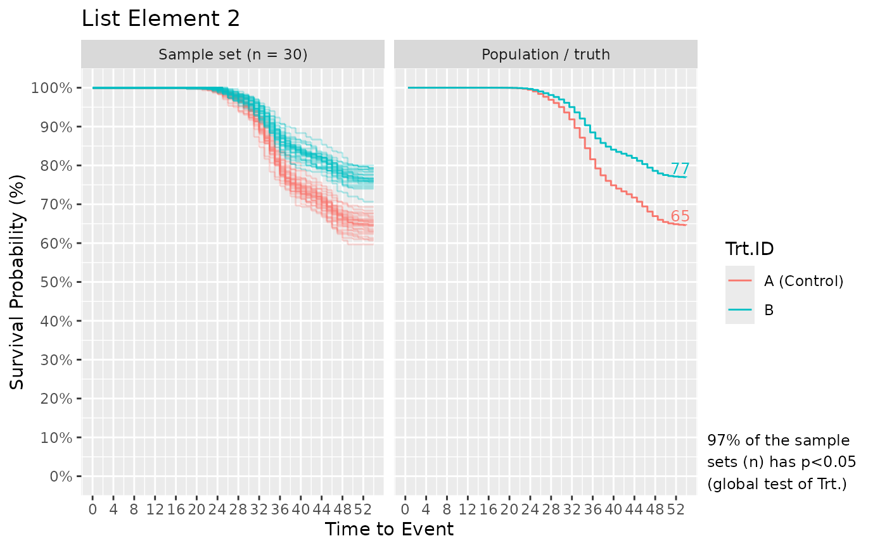

Simulates survival data based on a set of user-specified experimental parameters and a reference hazard curve (e.g. hazard curve from the control group). Able to simulate data with inter-cluster (e.g. tank) variation which is added based on the framework of the mixed cox proportional hazards model (coxme::coxme). Able to simulate right censored data (e.g. sampled fish) using sampling_specs argument. Able to simulate treatment- and tank- specific fish numbers. Optionally produces a plot illustrating the characteristics of the simulated data and that of the population / truth from which the data (sample) is simulated.
Usage
Surv_Simul(
haz_db,
fish_num_per_tank = 100,
tank_num_per_trt = 4,
treatments_hr = c(1, 1, 1, 1),
logHR_sd_intertank = 0,
sampling_specs = NULL,
exp_design = "between-tank",
n_sim = 1,
prog_show = TRUE,
plot_out = TRUE,
pop_out = TRUE,
theme = "ggplot2",
plot_save = TRUE
)Arguments
- haz_db
A dataframe representing the reference hazard curve; can be generated from
bshazard::bshazard()orSurv_Plots().- fish_num_per_tank
The number of fish to simulate per tank, defaults to 100. If this differs by treatment, specify a vector of numbers ordered according to
treatments_hr. When there is a need to compare experiments with different setups (fish numbers), specify the different setups as elements in a list (see Examples). This is useful for comparing power between experimental setups (for calculations seeSurv_Power()). Only 1 input parameter inSurv_Simul()can be specified as a list.- tank_num_per_trt
The number of tanks to simulate per treatment group, defaults to 4. If this differs by treatment, specify a vector of numbers ordered according to
treatments_hr. Input can be specified as elements in a list, with each element representing different experimental setups as described forfish_num_per_tank.- treatments_hr
A vector representing the hazard ratios of the treatment groups starting with the reference/control (HR = 1), defaults to
c(1, 1, 1, 1). Length of the vector represents the number of treatment groups. Input can be specified as elements in a list, with each element representing different experimental setups as described forfish_num_per_tank.- logHR_sd_intertank
The standard deviation of inter-tank variation (which contributes to overall data variation) in the log-HR scale according to the
coxmeframework. Defaults to 0 (no tank effect) which has been and quite oftenly, the estimate for injected Trojan fish data. For reference 0.1 reflects a low tank effect, while 0.35 is fairly high but can and has occurred in some immersion challenged fish datasets. Input can be specified as elements in a list, with each element representing different experimental setups as described forfish_num_per_tank.- sampling_specs
A dataframe containing at least 2 columns; "Amount" representing the number of right censored data (e.g. sampled fish) per tank; "TTE" representing the time the sampling occurred; optionally a "Trt.ID" column to account for different sampling conditions per tank per treatment. Trt.IDs must start with "Control", then capitalized letters (see Examples). Defaults to NULL (no sampling). Input can be specified as elements in a list, with each element representing different experimental setups as described for
fish_num_per_tank.- exp_design
A string specifying the type of experimental design. Can be "between-tank" which indicates each tank has a unique treatment hence the treatment effect occurs "between-tanks". Or, "within-tank" where each tank contains fish exposed to various treatments.
- n_sim
Number of survival dataset to simulate. Defaults to 1. For serious power calculations, an n_sim < 2000 is likely the most you'll ever need for precise results.
- prog_show
Whether to display the progress of
Surv_Simul()by printing the number of simulations completed. Defaults to TRUE.- plot_out
Whether to output the information plot (further details in Value). Defaults to TRUE.
- pop_out
Whether to output a dataframe containing the survival probability values for the population. Defaults to TRUE.
- theme
A string specifying the graphics theme for the plots. Theme "ggplot2" and "prism" currently available. Defaults to "ggplot2".
- plot_save
Whether to save plot as .tiff in the working directory. Defaults to TRUE.
Value
Returns a list that, at minimum, contains the simulated survival dataframe (surv_simul_db) which has at least 5 columns: TTE (Time to Event), Status (0 / 1), Trt.ID, Tank.ID, and n_sim which represents the simulation number for the data subsets. Additionally, can contain a column named "list_element_num" which represents the list element number when an input argument to Surv_Simul() is specified as a list.
If plot_out = TRUE, the list includes Kaplan-Meier survival plots. The left faceted plot represents the survival curves for the simulated sample set, while the right represents that for the population/truth. Numbers at the end of survival curves represent the end survival rate for that treatment. If the number of simulated sample sets exceed 1, multiple survival curves are drawn with each representing a sample set. In such cases, a statement is also provided informing of the probability to detect the effect of Treatment using a global logrank test from survival::survdiff(), i.e. the power or false positive rate.
If pop_out = TRUE, the list includes a dataframe (surv_pop_db) representing the survival rates (probabilities) for the population / truth from which the sample is simulated. The dataframe contains three columns: Trt.ID, surv_prob which represents the survival probabilities, and TTE.
Details
Simulations are based on uniform-probability draws (U ~ (0, 1)) from a set of events which can be expressed as a function of time using the cumulative density function of failures (F(t), i.e. cumulative mort. curve). Because the cumulative mort curve (F(t)) can be expressed in terms of the cumulative hazard function H(t), the relationship between H(t) and U draws is known (for derivation and equation, see Bender et al. (2003). Because H(t) is related (as the integral) to the hazard function h(t), and since h(t) is related to effects (e.g. treatment or tank) based on the cox proportional hazards model, such effects can now be incorporated into the simulation process as they interact with U. The simulation process is as follows:
Surv_Simul()takes a random sample from U (e.g. 0.7).U is then transformed into H as they are related as discussed. The equation relating U, H, and treatment effects is shown below (obtain from Bender et al. 2003 which also shows the derivation of the equation):
H = -log(U) ⋅ exp(-log(β)); β representing treatment or tank effects.
The function H(t) inverse (known from the supplied reference hazard curve) is applied to H to obtain t (time to event) which represents the survival data.
Data with t beyond the last follow-up period represent survivors (Status set to 0), and below it, represents mortalities (Status set to 1).
To verify the correct "randomness" is produced in the simulated survival data, given that adding "randomness" is the whole point of simulations (to me), 5 different validation checks have been performed (documented in a pdf to be uploaded to github). Those checks showed that the HR estimated by fitting two curves sampled from the same population, converges to a mean of 1 (as should be) over many simulations, and across simulations the HR varies as expected (SD of simulated HRs = SE of HR as supposed by the cox model). Those checks also showed that the p-value obtained by applying log-rank test to null (no-effect) simulated datasets, has a distribution that is uniform (as should be), with a false positive rate of 0.05 given the alpha used was 0.05 (as should be). Additionally, power calculated from the simulations equal to the power calculated from an online calculator. Last, the checks showed that the variations in a simulated survival curve is similar to that observed in curves simulated using a different, more limited, method (bootstraping / re-sampling with replacement).
See also
Link for executed Examples which includes any figure outputs.
Examples
# Starting from an example mortality database, we first generate the complete survivor
# data using Surv_Gen()
data(mort_db_ex)
surv_dat = Surv_Gen(mort_db = mort_db_ex,
starting_fish_count = 100,
last_tte = 54)
#> [1] "Your total number of tanks is: 12"
#> [1] "Your total number of treatment groups is: 4"
#> [1] "Your total number of fish in the output data is: 1200"
# Filter for the control group ("A") to get a reference hazard curve for simulations
surv_dat_A = surv_dat[surv_dat$Trt.ID == "A", ]
# Estimate the hazard curve of the control group and get the associated hazard
# dataframe using bshazard::bshazard() or safuncs::Surv_Plots()$Hazard_DB
ref_haz_route_bshazard = bshazard::bshazard(data = surv_dat_A,
survival::Surv(TTE, Status) ~ Tank.ID,
nbin = max(surv_dat_A$TTE),
verbose = FALSE)
#> NOTE: entry.status has been set to 0 for all.
ref_haz_route_bshazard = data.frame(summary(ref_haz_route_bshazard)$HazardEstimates)
ref_haz_route_safuncs = safuncs::Surv_Plots(surv_db = surv_dat_A,
data_out = TRUE)$Hazard_DB
# Simulate! Sampled 10 fish per tank at 45 DPC, but otherwise default conditions.
Surv_Simul(haz_db = ref_haz_route_safuncs,
treatments_hr = c(1, 0.8, 0.5),
sampling_specs = data.frame(Amount = 10,
TTE = 45))$surv_plots
#>
Simulated 1 of 1 sample sets
#> [1] "Time elapsed: 00:00:00 (hh:mm:ss)"

# Further, results of simulating multiple times are shown to better understand the
# chance that future samples accurately capture the truth/population. Specify n_sim!
Surv_Simul(haz_db = ref_haz_route_safuncs,
treatments_hr = c(1, 0.8, 0.5),
sampling_specs = data.frame(Amount = 10,
TTE = 45),
prog_show = FALSE, #hide simulation progress notes for cleaner output
n_sim = 4)$surv_plots
#> [1] "Time elapsed: 00:00:00 (hh:mm:ss)"

# Surv_Simul() can handle even more complicated experimental designs. Below, I use
# different (across treatments) fish numbers per tank, tank numbers, and sampling
# designs.
Surv_Simul(haz_db = ref_haz_route_safuncs,
fish_num_per_tank = c(50, 100, 100), #for Ctrl., Trt.A, B, respectively
tank_num_per_trt = c(1, 1, 2), #Ctrl., A, B
treatments_hr = c(1, 0.8, 0.5), #Ctrl., A, B
sampling_specs = data.frame(TTE = c(20, 40, 50),
Amount = c(0, 20, 5), #0 sample for Ctrl.
Trt.ID = c("Control", "A", "B")),
prog_show = FALSE,
n_sim = 4)$surv_plots
#> [1] "Time elapsed: 00:00:00 (hh:mm:ss)"

# What if we want to compare power of the global log-rank test (shown in the plot)
# across different experimental setups with different fish numbers per treatment?
# Below, I setup a Surv_Simul() to answer this question.
Surv_Simul(haz_db = haz_db_ex,
fish_num_per_tank = list(30, 100),
tank_num_per_trt = 3,
treatments_hr = c(1, 0.6),
prog_show = FALSE,
n_sim = 30)$surv_plots
#> [1] "Time elapsed: 00:00:01 (hh:mm:ss)"
#> [[1]]

#>
#> [[2]]

#>
# Plot[[1]] and [[2]] shows the results from fish_num_per_tank = 30 and 100,
# respectively. Additionally, the simulated data output (...$surv_simul_db) can be
# supplied to safuncs::Surv_Power() (under development) to calculate power for
# various tests (e.g. log-rank global, pairwise with(out) correction) or tests based
# on statistical models with various forms (e.g. with(out) tank-variation)).